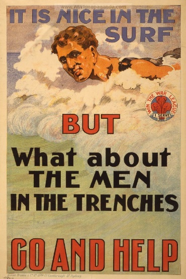
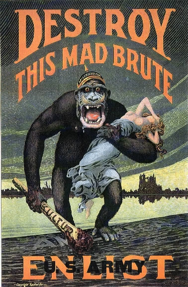

 Unlike any war before, World War 1’s massive casualties and combat in civilian areas would become a total war. Where most militaries before WWI relied on mercenaries or volunteer enlistment, WWI would have conscription and drafts to get the soldiers needed to keep fighting in the war of attrition. Many civilians saw the brute force of the war, due to their towns and villages being the frontline across the entire war. Many civilians were displaced or killed during the war. Over two million died due to military action, while over five million died due to malnutrition and disease. Germans would bomb civilian locations throughout the war. In early 1915, Germany would use its zeppelins to bomb Great Britain , but were not effective. Germany would also deploy artillery in 1918 that had a range of 75 miles, and required calculations of the earth’s rotation for accurate fire. This was used to bomb Paris from afar. These weapons were not just tools of destruction but also tools of fear.
The war was also full of propaganda to gather moral and patriotism in each nation. From movies to news the war was told in certain way to encourage enlistment but also convince the population of a nation. Propaganda was also used to make the enemy seem unhuman often portraying them as beasts. Britain would use its transatlantic cable to influence Americans, while certain losses would be used to inspire others to join to get revenge for the fallen. Propaganda was used a lot during the war and would become a major tool in future wars as media became more accessible to civilians.